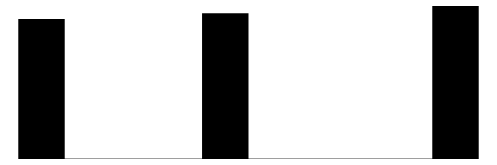
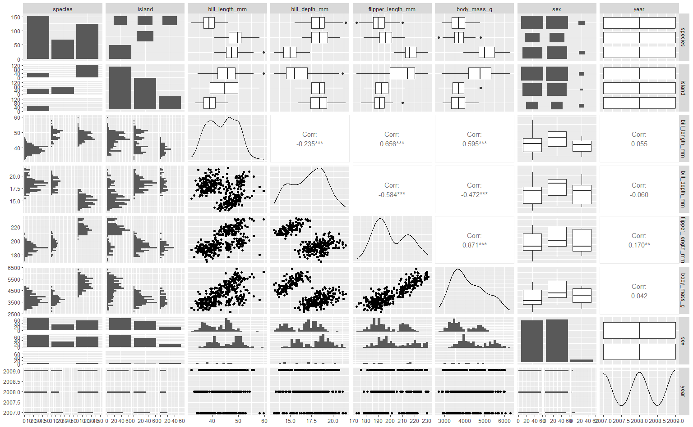
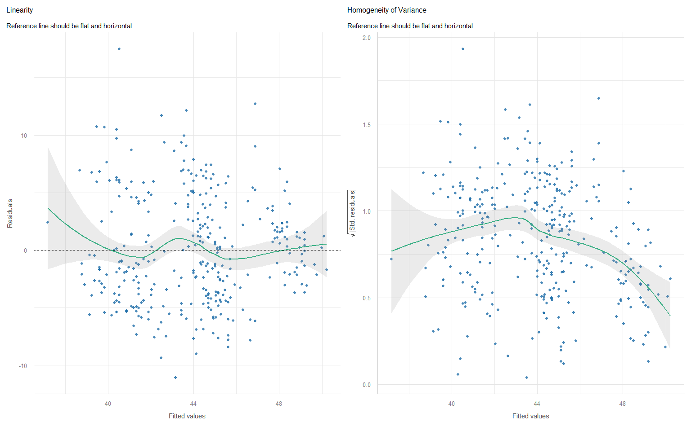
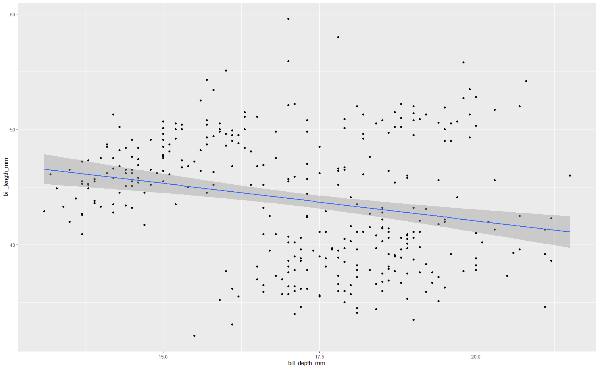

library(tidyverse)
library(alr4)
library(GGally)
library(parameters)
library(performance)
library(see)
library(car)
library(broom)
library(modelsummary)
library(texreg)
library(correlation)
library(patchwork)
library(lmtest)
library(sandwich)
library(clubSandwich)
library(forcats)
library(modelbased)
library(emmeans)
library(ggeffects)
knitr::opts_chunk$set(
fig.align = "center",
fig.width = 16,
fig.asp = 0.618,
fig.retina = 1,
out.width = "100%",
message = FALSE,
warning = FALSE,
echo = TRUE
)AE06-03 Simpson’s paradox and unobserved heterogeneity
Setup
Goals:
Learn about vicious role of Heteroskedasticity
The problem:
Let us understand how bill depth affects the bill length in penguins
Check: https://allisonhorst.github.io/palmerpenguins/


Data
library(palmerpenguins)
pings <- penguinsSummary stats
pings %>% datasummary_skim() | Unique | Missing Pct. | Mean | SD | Min | Median | Max | Histogram | |
|---|---|---|---|---|---|---|---|---|
| bill_length_mm | 165 | 1 | 43.9 | 5.5 | 32.1 | 44.5 | 59.6 | |
| bill_depth_mm | 81 | 1 | 17.2 | 2.0 | 13.1 | 17.3 | 21.5 | |
| flipper_length_mm | 56 | 1 | 200.9 | 14.1 | 172.0 | 197.0 | 231.0 | |
| body_mass_g | 95 | 1 | 4201.8 | 802.0 | 2700.0 | 4050.0 | 6300.0 | |
| year | 3 | 0 | 2008.0 | 0.8 | 2007.0 | 2008.0 | 2009.0 |  |
| N | % | |||||||
| species | Adelie | 152 | 44.2 | |||||
| Chinstrap | 68 | 19.8 | ||||||
| Gentoo | 124 | 36.0 | ||||||
| island | Biscoe | 168 | 48.8 | |||||
| Dream | 124 | 36.0 | ||||||
| Torgersen | 52 | 15.1 | ||||||
| sex | female | 165 | 48.0 | |||||
| male | 168 | 48.8 |
ggpairs(pings)
Fit and summary
ping_fit1 <- lm(bill_length_mm ~ bill_depth_mm + sex, pings)
parameters(ping_fit1)Parameter | Coefficient | SE | 95% CI | t(330) | p
---------------------------------------------------------------------
(Intercept) | 61.00 | 2.35 | [56.38, 65.62] | 26.00 | < .001
bill depth mm | -1.15 | 0.14 | [-1.43, -0.87] | -8.16 | < .001
sex [male] | 5.44 | 0.55 | [ 4.35, 6.54] | 9.81 | < .001performance(ping_fit1)# Indices of model performance
AIC | AICc | BIC | R2 | R2 (adj.) | RMSE | Sigma
------------------------------------------------------------
1980.5 | 1980.6 | 1995.7 | 0.266 | 0.262 | 4.677 | 4.699check_model(ping_fit1, check = c("linearity", "homogeneity"))
Check assumpation
library(lmtest)
bptest(ping_fit1)
studentized Breusch-Pagan test
data: ping_fit1
BP = 36.958, df = 2, p-value = 9.431e-09Correct SE
parameters(ping_fit1, vcov = "HC5")Parameter | Coefficient | SE | 95% CI | t(330) | p
---------------------------------------------------------------------
(Intercept) | 61.00 | 1.92 | [57.23, 64.77] | 31.80 | < .001
bill depth mm | -1.15 | 0.12 | [-1.39, -0.91] | -9.46 | < .001
sex [male] | 5.44 | 0.53 | [ 4.41, 6.48] | 10.33 | < .001Exploring relationship between bill_length_mm and bill_depth_mm
Step 1. Scatter + linear regression
pt1 <-
pings %>%
ggplot() +
aes(x = bill_depth_mm , y = bill_length_mm) +
geom_point() +
geom_smooth(aes(x = bill_depth_mm , y = bill_length_mm),
method = "lm", inherit.aes = FALSE)
pt1
Step 3. Scatter + linear regression + islands shapes
# pt1 +
# aes(shape = island) Step 4. Scatter + linear regression + islands shapes + species colours
# pt1 +
# aes(shape = island) +
# aes(colour = species)Step 5. Scatter + linear regression + islands shapes + species colors + within species linear regressions
# pt1 +
# aes(shape = island) +
# aes(colour = species) +
# geom_smooth(aes(x = bill_depth_mm, y = bill_length_mm,
# colour = species, fill = species),
# method = "lm", inherit.aes = FALSE)Built a regression that estimates such kind of relatiohsip
# ping_fit3 <- lm(____________, pings)Report regression results correcting standtard errors
# estimate_slopes
# ggeffectSolutions
# pt1 +
# geom_smooth(aes(x = bill_depth_mm , y = bill_length_mm),
# method = "lm", inherit.aes = FALSE) +
# aes(shape = island) +
# aes(colour = species) +
# geom_smooth(aes(x = bill_depth_mm, y = bill_length_mm,
# colour = species, fill = species),
# method = "lm", inherit.aes = FALSE)
ping_fit3 <- lm(bill_length_mm ~ bill_depth_mm*species + sex, pings)
estimate_slopes(ping_fit3, trend = "bill_depth_mm", at = "species") %>% plot()
ggeffect(ping_fit3, terms = c("bill_depth_mm", "species")) %>% plot()
library(lmtest)
library(sandwich)
ggeffect(
ping_fit3,
terms = c("bill_depth_mm", "species"),
vcov. = vcovHC(ping_fit3, "HC5")
) %>%
plot()